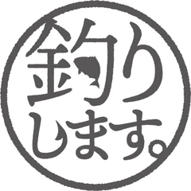

매장·층별 안내도
3개 층, 35개 매장.
층별 안내도
매장을 누르면 층과 영업시간이 나옵니다. 몰 안 안내판의 QR 코드를 스캔하면 현재 위치가 빨간색으로 표시됩니다.
쇼핑몰의 평면도를 바탕으로 만들었습니다. 누르기 쉽도록 모양을 단순하게 했으므로 실제 크기와 다릅니다.
- 식품
- 음식점·카페
- 생활·잡화
- 패션
- 미용·건강
- 서비스
- 쇼핑몰 직영
- 기념품
지도를 옆으로 움직일 수 있습니다.
1F


츠바키야つばき屋슈퍼마켓DAISOダイソー100엔숍고무기노 도레이小麦の奴隷빵집통로출입구본파티ボンパティ기념품·케이크분메이도 소혼텐文明堂나가사키 카스텔라하타나카はたなか화과자와케이안和敬庵차·커피 원두에스컬레이터행사장츠리시마스釣りします낚시용품라쿠텐 모바일楽天モバイル휴대폰 매장통로엘리베이터계단피 파라다이스ピーパラダイス아이스크림hair salon VITA미용실Leon미용실휴대폰 상담실携帯相談室안내데스크현재 위치멘야 마루후쿠麺屋まる福우동·소바·덮밥·정식리틀 쿠루사リトル・クルサ피자BLOSSOM일식당도코모 숍ドコモ휴대폰 매장화장실휴게 공간계단출입구출입구타코야키 켄짱たこ焼きけんちゃん밖에서 입장코인 세탁소コインランドリー밖에서 입장주하치신와 은행 ATM밖에서 입장츠리시마스 부동산釣りします不動産12월 오픈 예정밖에서 입장
2F


계단판타지 랜드ファンタジーランド게임센터아이오이 플래닝하쿠주 헬스트론白寿ヘルストロン전위 치료 체험메가네노 요네자와メガネのヨネザワ안경·보청기창고시티하우스託児所シティハウス일시 돌봄·휴일 돌봄투피스ツーピース가구판타지 랜드ファンタジーランド게임센터통로팔레트パレット의류팔레트パレット의류팔레트パレット의류투피스ツーピース가구통로오야코 판다おもちゃ屋 おやこパンダ장난감팔레트パレット의류에스컬레이터현재 위치카타코리 호구시(타이) 메구미肩こり、ほぐし(隊)恵-megumi-전신 마사지투피스ツーピース가구SpRay여성복미라이 고토未来ごとう주간보호통로엘리베이터옥스퍼드オックスフォード서점모리 수선 전문점森補正専門店수선·수예용품계단팔레트 옴パレットHOMME남성복리틀 시어터リトルシアター여성복가방의 타츠야 하나코多津屋Hanako가방·잡화·의류·모자SpRay여성복화장실계단


지도의 매장을 누르면 여기에 안내가 나옵니다.
층별 매장
영업시간이 표시되지 않은 매장은 매장에 확인해 주세요. 쇼핑몰 영업시간은 10:00~20:00입니다.
검색 결과가 없습니다.
화장실·물품보관함·Wi-Fi를 찾으시나요? 층별 안내도와 시설 안내를 보세요. 층별 안내도 · 시설 안내
화장실을 찾으시나요? 화장실 위치는 층별 안내도에 표시되어 있습니다. 층별 안내도 ↑
1F19


분메이도 소혼텐
일본어 간판: 文明堂総本店 (Bunmeido Sohonten)
나가사키 카스텔라·기념품
1F영업 10:00–19:00기념품



츠리시마스
일본어 간판: 釣具店 釣りします (Tsurishimasu)
낚시용품·중고품·렌터카
1F영업 10:00–18:00


2F15


가방의 타츠야 하나코
일본어 간판: バッグの多津屋 Hanako (Bag no Tatsuya Hanako)
가방·잡화·의류·모자
2F영업 10:00–19:00


카타코리 호구시(타이) 메구미
일본어 간판: 肩こり、ほぐし(隊) 恵-megumi- (Katakori, Hogushi(tai) Megumi)
전신 마사지
2F영업 10:00–19:00


3F1


새 소식, 이벤트, 구인 정보는 일본어로만 제공됩니다. 브라우저의 번역 기능을 이용해 주세요.